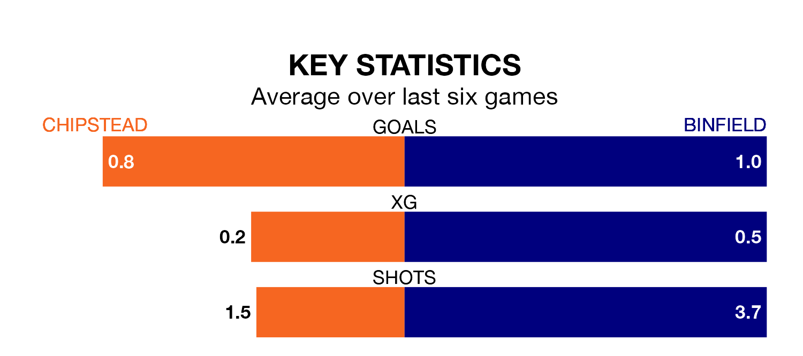

Saturday's match at High Road sees two relegation candidates play each other, as 19th-ranked Chipstead host 20th-placed Binfield.
Chipstead have picked up 26 points from their first 26 Isthmian League Division One – South Central games, with seven wins and five draws.
That is nine points more than Binfield have collected, having won three and drawn eight.
Chipstead are in disappointing form in the Isthmian League Division One South Central, with one win and two draws from their last six games.
With no wins and three draws over that period, Binfield's form is slightly worse – they have taken three points from 18, compared to the hosts' five.
In the last five years, Chipstead and Binfield have played each other on five occasions. They won one each, and they drew three times.
On average, Chipstead scored 1.2 goals and Binfield 1.2 in those matches.
Their last meeting was on August 26, when they played out a 1-1 draw.
With 32 goals in 31 games so far this season, the away team are the league's second-lowest scorers with 1.0 goals per game. And they are conceding more than average, letting in 96 goals at a rate of 3.1 per game.
Chipstead are also below average scorers, with 1.2 goals per game, compared to a league average of 1.6. They have conceded 2.1 goals per game.
Chipstead's last match was on March 23, a 2-0 draw against Sutton Common Rovers.
Binfield lost 2-0 against Leatherhead last time out, also on March 23.
Updated: 12:16 (UTC), 25/03/24